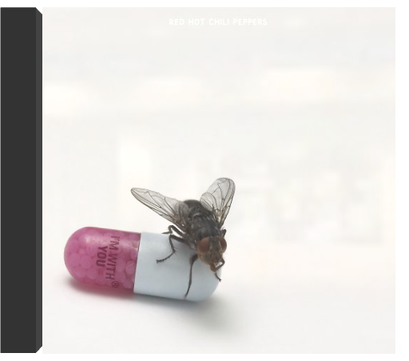
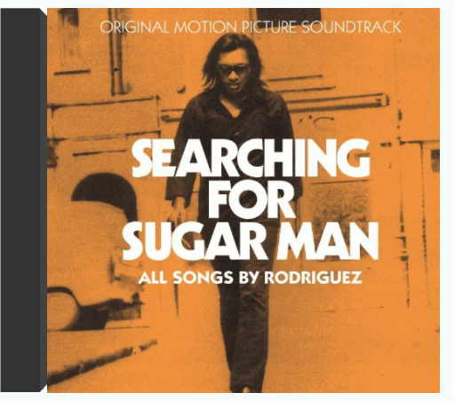
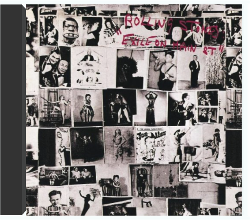
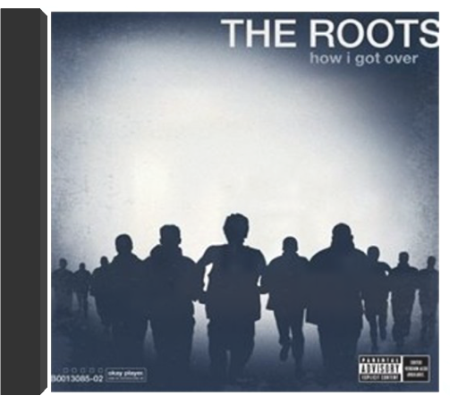
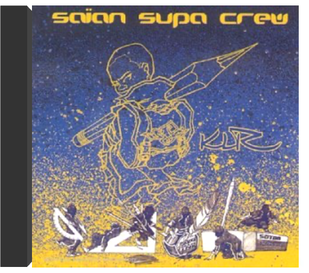

 I'm with youred hot chili peppers  ATTENTION : Vendu sans boite ni jaquette ! CD Uniquement dans une pochette. C'est le plus important et ça vous permet d'avoir les disques moins chers. Envoie rapide et soigné.  RSD. Previously unreleased on vinyl. Limited and hand-numbered to 2,000 copies worldwide. Almost 10 years ago, Light in the Attic and DJ Supreme La Rock compiled the first ever set of vintage Pacific Northwest soul on Wheedle's Groove: Seattle's Finest in Funk & Soul 1965-75 (LITA 009) featuring such rare sides as "I Just Want to Be (Like Myself)" by legendary funk outfit Robbie Hill's Family Affair. Nearly a decade on, more unheard Seattle soul gems continue surfacing. This November 29th, Light in the Attic is honored to release, for the first time on vinyl, Gotta Get Back: The Unreleased L.A. Sessions from Robbie Hill's Family Affair. Originally recorded at RCA Studios in Los Angeles in January 1975 with Executive Producer Cuba Gooding Sr. and the Main Ingredient (the Family Affair were the Ingredient's backing band at the time), these five tracks remained lost until the recent discovery of the original multi-track masters. The tapes were carefully mixed by renowned engineer and producer Steve Fisk. To say it's a miracle that these tapes surfaced would be a massive understatement. Robbie named his band "Family Affair" for a reason - his band is his family and what you hear is proof that the blood really is thicker than the mud. What you're now holding in your hands is a pinnacle recording from a band that continues on to the present day, surviving in Seattle's Central District, carrying on a decades' long tradition. |  searching for sugar manrodriguez 1 - Sugar man  exile on main streetthe rolling stones L'Amérique selon les Stones, recréée dans une cave sur la Côte d'Azur ! L'exil, c'est un peu la vie des Rolling Stones au début des années soixante-dix. Ils ont fui l'Angleterre pour des raisons fiscales et le guitariste Keith Richards, héroïnomane de réputation internationale, a tout intérêt à éviter les douaniers chatouilleux. Qu'à cela ne tienne, ses acolytes viennent enregistrer chez lui à Villefranche. Et c'est là, isolés, soudés par les circonstances dans un studio souterrain improvisé que les Stones vont recréer une Amérique de rêve, celle de leurs idoles et de leurs racines musicales : gospel ("Shine A Light" avec l'orgue de Billy Preston, "Just Wanna See His Face"), country blues ("Black Angel"), boogie ("Rip This Joint", "Turd On The Run"), country'n'western ("Sweet Virginia"), soul ("Let It Loose") et puis le rock, tout simplement avec trois classiques de taille : "Happy", chanté par Richards, "All Down The Line" et "Tumbling Dice". Les Stones sont en très grande forme, ils swinguent comme jamais, Richards surtout qui grave, ici, quelques-uns de ses meilleurs riffs. Happés plus tard par la jet-set et usés par les drogues, ils enregistreront encore de grands disques, mais celui-ci est leur dernier vrai chef-d'oeuvre. —Hubert Deshouse  how I got overthe roots Long-awaited 2010 album from Hip Hop pioneers The Roots. The album, which takes its name from Clara Ward's Gospel classic, is the Roots' first new release since joining Late Night With Jimmy Fallon for a full time gig as the show's house band. Grammy Award winners the Roots characterize the songs on the album as "depicting the everyman's search for hope in this dispiriting post-hope zeitgeist". The lead single, "Dear God 2.0.", re-imagines the Monsters Of Folk song "Dear God" and features MOF members Yim Yames from My Morning Jacket, Conor Oberst and Mike Mogis from Bright Eyes and M. Ward. Also includes two appearances from Grammy-winning Soul man John Legend. Other guests on HIGO include Joanna Newsom, Blu, Peedi Peedi , Mercedes Martinez, Icelandic alt-pop singer Patty Crash, newcomer Sugar Tongue Slim as well as long time Roots' Crew members Dice Raw, Truck North and P.O.R.N.  2017 vinyl reissue of unsung Stax label nugget from 1973. Veteran R&B singer & guitarist (of "Mister Moonlight" fame) with tight & funky young backing band recorded at Muscle Shoals studios  klrsaian supa crew Six garçons issus de trois collectifs (Ofx, Simple Spirit et Eplicit Samuraï) ont mis en commun en 1997 leur savoir-faire afin de proposer leur version du hip-hop et secouer les productions monocordes françaises proposées jusqu'alors. "Le hip-hop tourne tant sur lui-même, en devient ouf, en manque de souffle, mec pousse toi j'étouffe" lance même Feniksi sur "Malade imaginaire". Les Saïan ne seraient-ils pas tout simplement le reflet de notre inconscience ? Toute l'essence du hip-hop se retrouve sur cet album, à savoir une diversité musicale : rap, ragga sur "Raggots", zouk, soul, etc., tout ça réalisé avec humour et beaucoup de feeling, le tout mélangé avec une dose de Human Beat Box. Marre du rap 93 (Seine-Saint-Denis) ou de son opposé 13 (Bouches-du-Rhône), vive le hip-hop pour tout le monde ! — Sébastien Prieto |

Julien
Collection Total:
2 025 Items
2 025 Items
Last Updated:
Dec 25, 2023
Dec 25, 2023


 Made with Delicious Library
Made with Delicious Library